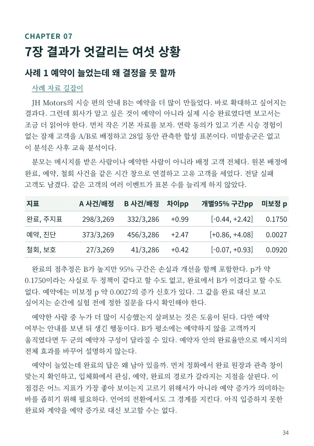
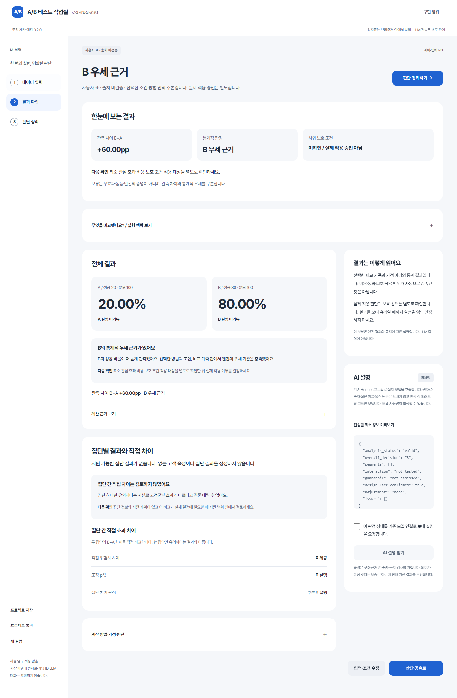

전자책 『그래서, 이 캠페인 계속할까요?』
가상 자동차 회사의 시승 안내를 예로 든 97쪽 저자 검토본입니다.
- 군을 어떻게 배정했고 같은 기간에 같은 지표로 측정했는지 확인합니다.
- 전체 결과를 먼저 읽고 적용할 고객군이 달라질 때 확인할 조건을 기록합니다.
- 개선 폭과 보호 조건을 함께 검토하고 확대, 제한 적용, 보류를 결정합니다.
전자책 PDF 바로 열기 (GitHub 접근 권한 필요)

실험 결과를 해석하고, 적용 범위와 다음 확인 사항을 기록하는 작업을 소개합니다.
가상 자동차 회사의 시승 안내를 예로 든 97쪽 저자 검토본입니다.
전자책 PDF 바로 열기 (GitHub 접근 권한 필요)

Windows와 Python 3에서 실행하는 로컬 앱입니다. 아래 화면은 가상 입력의 결과 예시입니다.
Tool 실행본 ZIP 바로 열기 (GitHub 접근 권한 필요)
